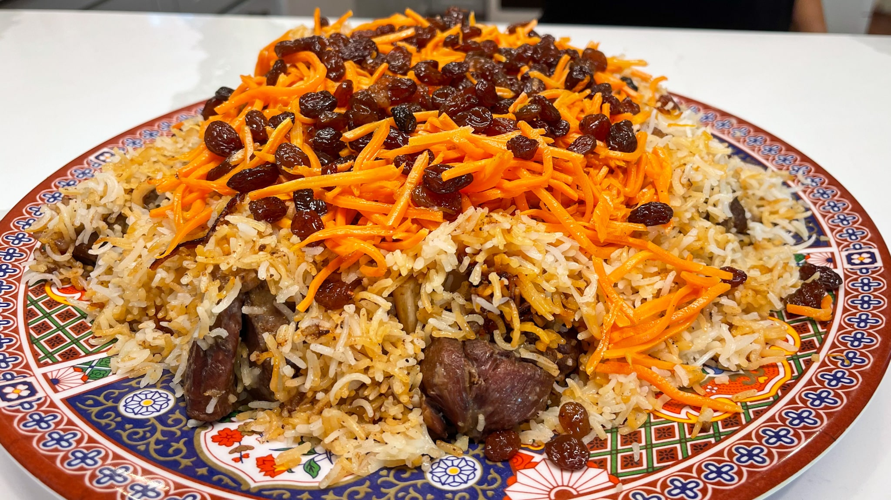

Afghani Pulao
How to make Afghani Pulao
Ingredients:
| 
|
- white rice
- beef meat
- carrot
- raisins
- 1/4 oil
- 4 cups of water
|
Instructions:
1. Get a white rice and soak it in water and leave it in water for 1 hour
2. Start cutting meat into small pieces and cook it for 10 minutes
3. Start cutting carrots into small pieces and with raisins cook it for 5 minutes and make sure it's not fully cooked
4. Take all of the steps and add 4 cups of water and 1/4 oil and mixed them up
5. Get a bigger pot and put everything on the pot and wrap the lid pot with foil paper
6. Take the pot and put it on oven, set the temperature to 450 degree and let it cook slowly for about 2 hours